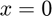
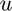
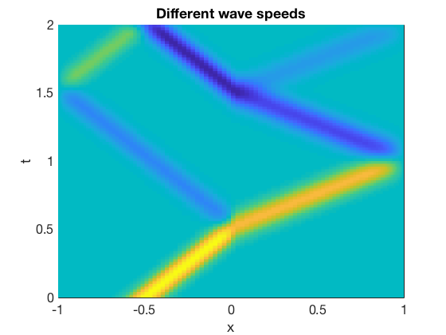

function wavereflect % ignore this line
We now use a wave speed that is discontinuous at .
m = 120; [x,Dx] = diffcheb(m,[-1,1]); c = 1 + (sign(x)+1)/2; chop = @(u) u(2:m); extend = @(v) [0;v;0];
This function computes the time derivative of the method-of-lines system.
function dwdt = odefun(t,w) u = extend(w(1:m-1)); z = w(m:2*m); dudt = Dx*z; dzdt = c.^2 .* (Dx*u); dwdt = [ chop(dudt); dzdt ]; end
We set the initial conditions and solve using ode45.
u_init = exp(-100*(x+0.5).^2);
z_init = -u_init;
w_init = [ chop(u_init); z_init ];
t = linspace(0,2,101);
[t,W] = ode45(@odefun,t,w_init);
W = W.'; % rows for x, columns for t
Now we extract the original  and  variables from the results, adding in the zeros at the boundaries for .
variables from the results, adding in the zeros at the boundaries for .
n = length(t)-1; U = [ zeros(1,n+1); W(1:m-1,:); zeros(1,n+1) ]; Z = W(m:2*m,:);
Finally, we plot the results.
pcolor(x,t,U.') shading flat % shading interp looks better on screen % ignore this line xlabel('x'), ylabel('t'), title('Different wave speeds') % ignore this line
Each pass through the interface at generates a reflected and transmitted wave. By conservation of energy, these are both smaller in amplitude than the incoming bump.
end % ignore this line